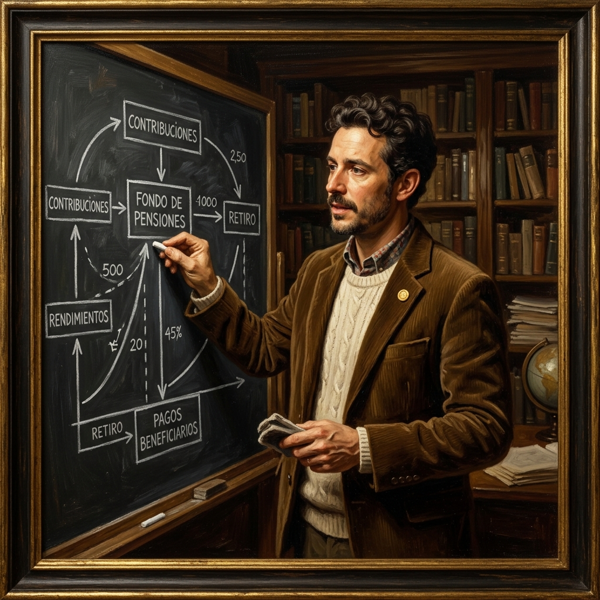
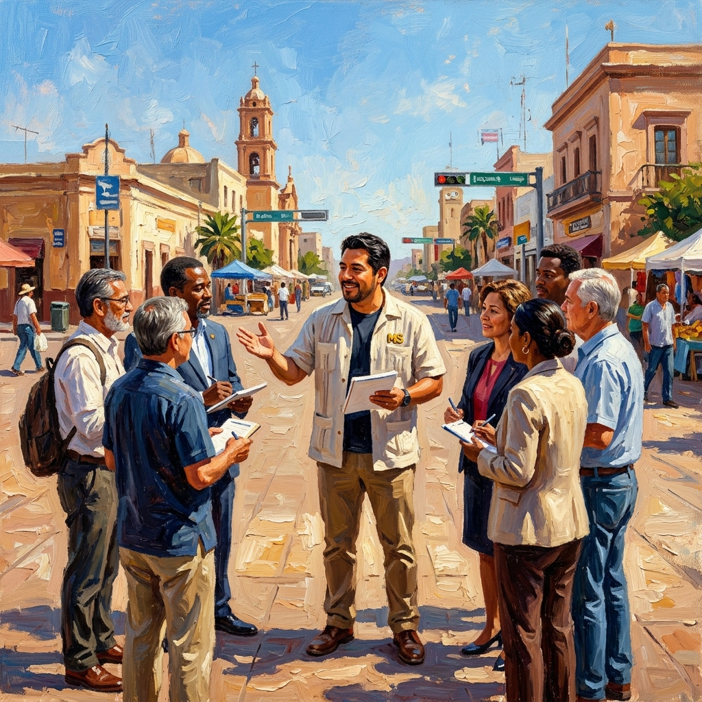
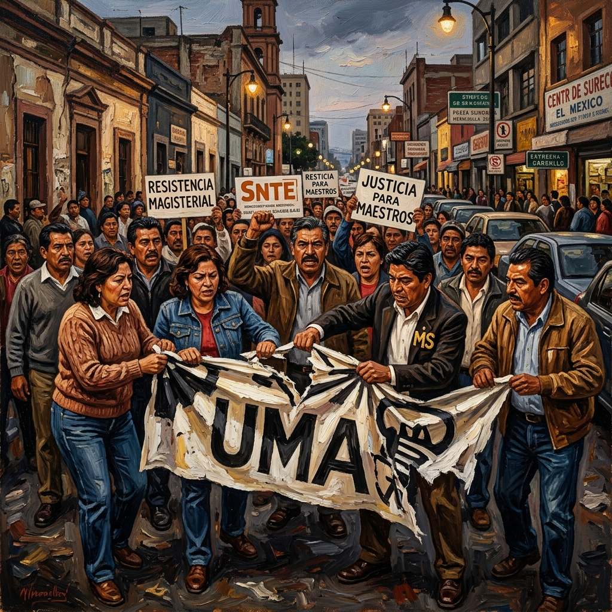
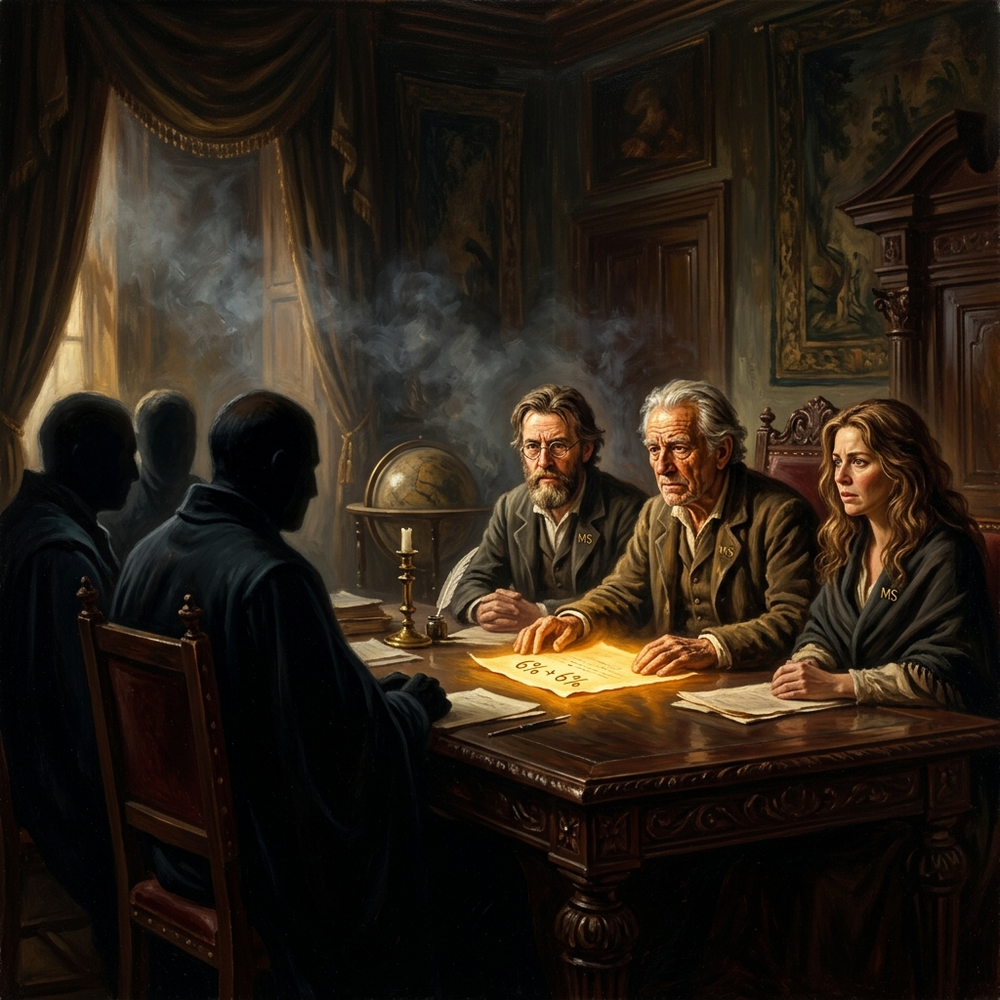
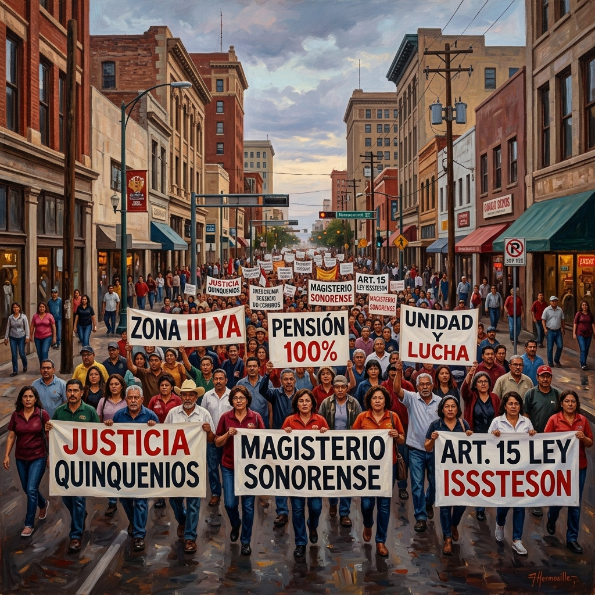
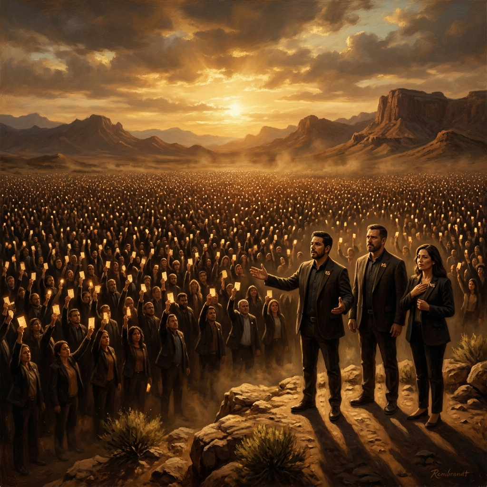
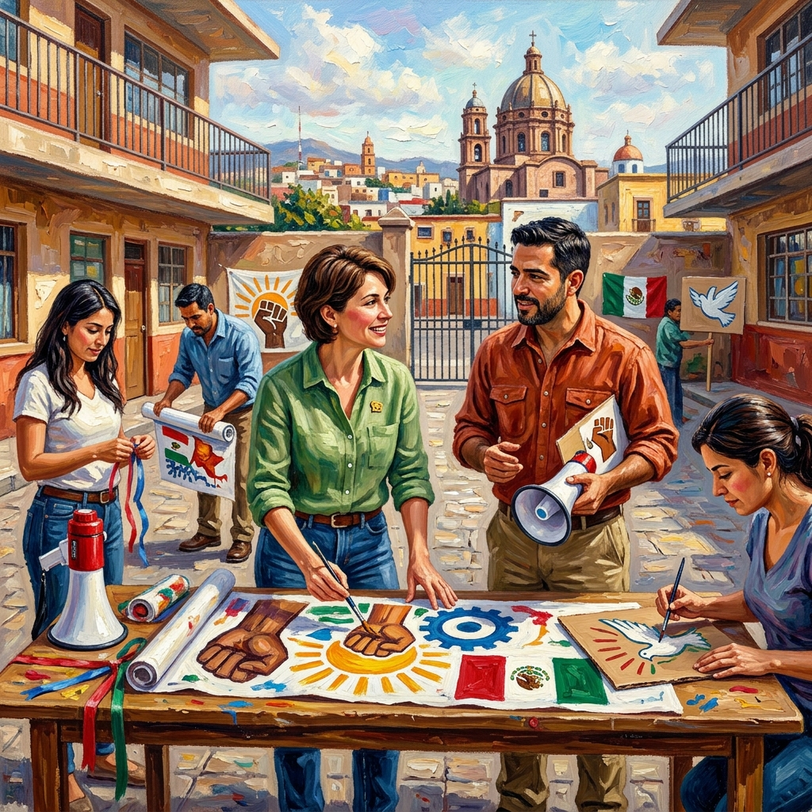
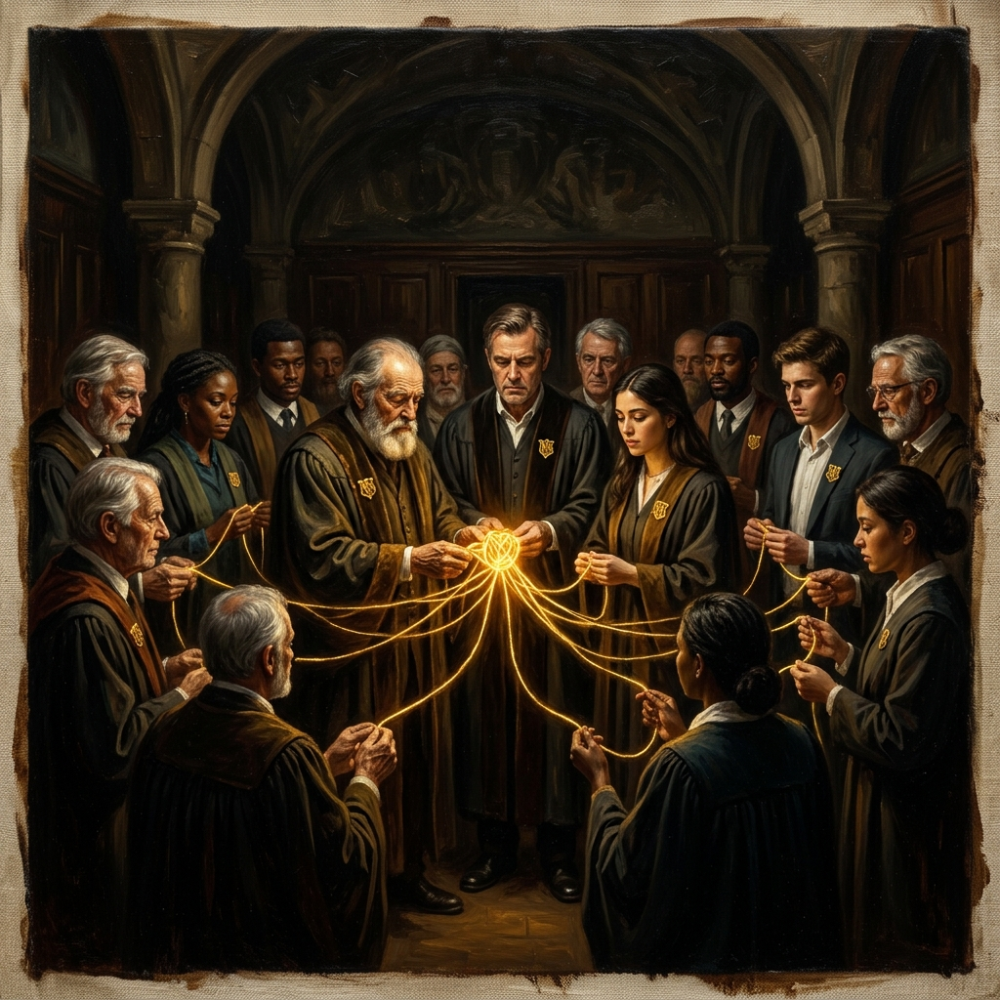

El Motor de la Dignidad
Bajo la guía estratégica del Profr. Juan Pablo de Navojoa, arquitecto de la Pensión Intergeneracional Protegida (PIP), el Magisterio Sonorense traza la ruta técnica hacia el retiro digno. Junto a Kristian y Paloma, desglosamos la ingeniería del futuro para blindar el esfuerzo de una vida contra la rapiña financiera y el charrismo corporativo. Este volumen es el plano de construcción de nuestra propia libertad soberana.
"No vamos con la mano extendida, vamos con una propuesta construida desde las bases." VOLVER AL MENÚEl Juego de Suma Cero
La reforma de 2007 no fue un error administrativo; fue un diseño actuarial deliberado para transferir la riqueza docente al capital financiero. Jiang Xueqin nos advierte: en un juego de suma cero, la ganancia del sistema es el despojo del maestro. Aquí exponemos la trampa de las AFORES y la necesidad de una ruptura estructural para recuperar el pacto intergeneracional que una vez sostuvo nuestra dignidad.
"Un juego donde uno pierde para que otro gane no es justicia, es despojo institucional." VOLVER AL MENÚ
La Manufactura de la Ignorancia
La Agnotología es la ignorancia producida deliberadamente por el Estado. Los conceptos salariales opacos y los estados de cuenta confusos no son accidentes; son herramientas de control del charrismo corporativo. Kristian y Paloma iluminan la oscuridad burocrática para que el maestro sonorense recupere su soberanía informativa y técnica frente al sistema.
"La luz de la verdad técnica es el peor enemigo de la opacidad sindical." VOLVER AL MENÚ
Inducción hacia Atrás
La Inducción hacia Atrás (Backward Induction) nos permite ver el colapso de 2026 y actuar hoy para evitarlo. Si el objetivo es el 100% de tasa de reemplazo, nuestra ruta crítica marca hitos innegociables. El 1 de Mayo no es una fecha en el calendario; es un hito de presión estructural en nuestro tablero de negociación. No esperamos el futuro; lo construimos desde la necesidad técnica del presente.
"Para llegar a la victoria, debemos empezar diseñando el final." VOLVER AL MENÚ
El Dilema del Magisterio
La fragmentación individual es el Equilibrio de Nash que el sistema prefiere para mantenernos dóciles. La PIP propone un nuevo contrato social donde la cooperación es la única estrategia ganadora para todos los niveles: desde el nuevo ingreso hasta el jubilado. La cohesión no es solo un lema; es la variable matemática que decide nuestra supervivencia colectiva.
"Solos somos piezas de cambio; unidos somos el motor del tablero." VOLVER AL MENÚ
Cambiando la Matriz de Pagos
Al proponer el modelo solidario del 6%+6%, elevamos drásticamente el costo de traición del Gobierno. Ya no pedimos presupuesto como una limosna; imponemos una estructura técnica que alinea los intereses del Estado con la justicia social del magisterio. Es una jugada maestra que obliga al poder a elegir entre la estabilidad o la ruptura total.
"La técnica es el único lenguaje que el poder se ve obligado a respetar." VOLVER AL MENÚ
La Ecuación Dorada
La Ecuación Dorada de la PIP es el blindaje técnico que garantiza que el esfuerzo del maestro se quede en manos del maestro. Pero cuidado: el "Mapa del Despojo" nos muestra cómo el SNTE-SEC ha racionado la rezonificación a Zona III, privilegiando a mandos desde 2001 mientras la base en Hermosillo y Cajeme espera 29 años. Fondos intergeneracionales protegidos por ley, auditables y transparentes, son la única garantía de que el 'agujero negro' de la Zona II deje de tragarse nuestro retiro.
"La rezonificación no es una prebenda de antigüedad; es un derecho de dignidad inmediata." VOLVER AL MENÚ
Señalización y Credibilidad
Nuestra consulta masiva es la señal de credibilidad (Signal) más potente en el tablero. Demostramos al sistema que no dependemos de cúpulas negociables ni de líderes 'doblables', sino de una base informada y decidida que no aceptará migajas. Cada firma es un mensaje directo: el Magisterio Sonorense ha cruzado el umbral del compromiso irrevocable.
"Nuestra firma es el juramento técnico de nuestra libertad colectiva." VOLVER AL MENÚ
El Punto de Inflexión
El Punto de Inflexión se alcanza cuando la indignación se convierte en engranaje. El Magisterio Sonorense ha superado el umbral crítico; ahora somos el motor que arrastra al resto del país hacia la dignidad. Ya no somos reactivos; somos la fuerza proactiva que define el ritmo de la negociación nacional. La inercia del cambio ha comenzado.
"Cuando el motor de la base arranca, el tablero oficial colapsa." VOLVER AL MENÚ
Asabiyyah: El Contrato de Honor
Asabiyyah: El vínculo de honor que une a Navojoa con San Luis y a cada rincón del estado. Maestros activos y retirados formando un solo escudo contra la traición del charrismo. Nuestra cohesión social es la única protección contra el olvido oficial. Somos una sola fuerza, un solo contrato de honor que no conoce fronteras jerárquicas.
"Honor a la base: la única soberanía que el sistema no puede decapitar." VOLVER AL MENÚJaque Mate
Jaque Mate al Olvido. Juan Pablo, Kristian y Paloma cierran este tomo con la certeza absoluta de la victoria técnica. La PIP es el motor de la dignidad final que ha desmantelado la fábrica de ignorancia. El tablero ahora es nuestro, y el resultado es la justicia histórica para el docente sonorense. La dignidad ha ganado la partida.
"El tablero es nuestro. La victoria es de la base. Jaque mate." CERRAR TOMO XIX Y VOLVER